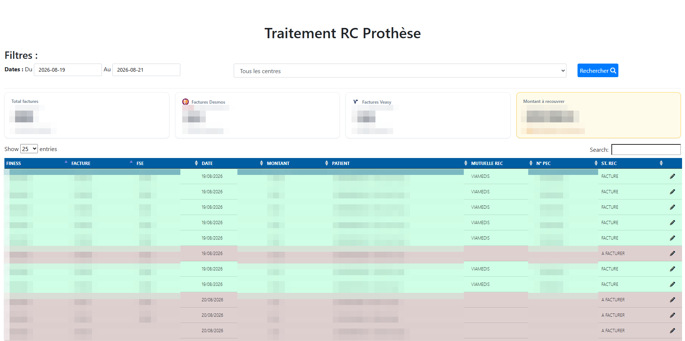
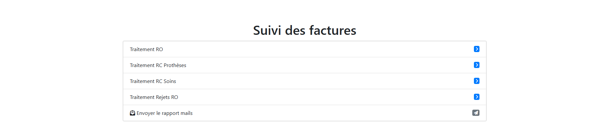
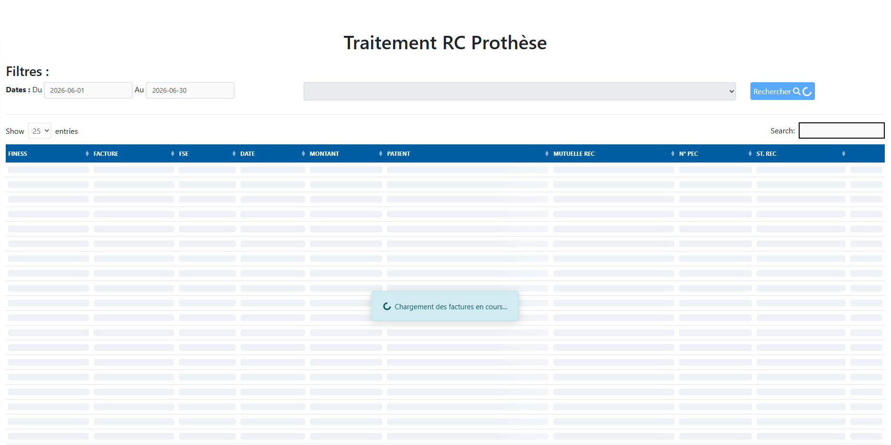

{kind=link}

{kind=link}

{kind=link}

Présentation
Cette réalisation porte sur la plateforme web interne de recouvrement de facturation d’un groupe de centres de santé dentaire, une ETI du secteur de la santé. Développée en PHP sur SQL Server, avec jQuery et DataTables côté interface, elle outille au quotidien deux flux financiers critiques : le tiers payant des mutuelles et le recouvrement des impayés patients. Ma mission en alternance : évolutions fonctionnelles, refonte UX de pages métier et maintenance de l’application.
Objectifs, contexte, enjeux et risques
Le contexte : des volumes de facturation importants, répartis sur de nombreux centres, suivis par des équipes dédiées dont la plateforme est l’outil de travail principal. L’objectif : fluidifier le traitement des dossiers, rendre l’état de chaque flux immédiatement lisible et réduire les manipulations inutiles. L’enjeu est d’abord financier, car la performance du recouvrement conditionne la trésorerie du groupe ; il est aussi réglementaire, puisque tout se joue au contact de données de santé soumises au RGPD. Les risques sont classiques mais réels : provoquer une régression sur un outil utilisé chaque jour, dérouter des utilisateurs installés dans leurs habitudes, ou alourdir une dette technique déjà présente sur une application ancienne.
Les étapes
Première étape : la prise en main. J’ai lu le code existant, appris le vocabulaire métier du recouvrement et observé la façon dont les équipes utilisent réellement l’outil. Ensuite, j’ai livré des évolutions fonctionnelles en continu sur les deux flux, en commençant par des périmètres limités pour construire la confiance. Puis le chantier principal : la refonte de la page centrale de traitement, avec les tuiles d’indicateurs « À facturer / Facturé / Total », des skeleton screens pendant les chargements et des tableaux DataTables plus maniables, en conservant volontairement le langage couleur que les équipes avaient intériorisé. Enfin, j’ai rédigé une documentation technique complète, livrée en plusieurs formats (PDF, PPTX, supports illustrés), et accompagné des mises en production progressives.
Les acteurs
Les équipes de facturation et de recouvrement, utilisatrices quotidiennes, ont joué le rôle central : leurs retours ont orienté chaque choix d’interface. La direction des opérations portait les priorités et arbitrait les évolutions. Côté technique, le travail s’est fait au sein de l’équipe IT du siège, sous la supervision de mon tuteur d’alternance, en lien avec les équipes comptables destinataires des données.
Les résultats
Pour l’organisation : une page de traitement plus rapide à lire et à utiliser, des indicateurs fiables adoptés comme référence de pilotage, une adoption immédiate sans formation supplémentaire, et une documentation qui libère l’équipe de la dépendance à une seule personne. Pour moi : une montée en compétence accélérée en PHP sur une application critique, la découverte du métier du recouvrement de santé, et la preuve qu’une refonte UX peut réussir sans brusquer ses utilisateurs.
Les lendemains du projet
Dans le futur immédiat, la plateforme continue d’évoluer : de nouvelles demandes des équipes sont livrées au fil de l’alternance. À plus longue distance, elle est concernée par la modernisation data de l’entreprise : la migration vers PostgreSQL rejoindra à terme son socle de données. Aujourd’hui, elle reste l’outil quotidien des équipes de recouvrement, désormais documenté et plus agréable à utiliser.
Mon regard critique
Ma fierté principale : la refonte adoptée sans résistance, résultat d’un vrai travail d’écoute préalable. Avec le recul, des tests automatisés introduits dès le départ auraient sécurisé davantage les évolutions successives ; c’est la leçon la plus claire du projet. Autre enseignement : sur une application ancienne, chaque évolution est l’occasion de rembourser un peu de dette technique, à condition de le décider explicitement. Enfin, ce projet a confirmé une conviction : l’UX d’un outil interne mérite exactement le même soin qu’un site public, car les équipes métier sont des utilisateurs à part entière.
Compétences rattachées
Les compétences que cette réalisation met en œuvre, issues de la matrice compétences ↔ réalisations du portfolio.
-
T1 — Développement web full-stack (PHP, MySQL, JavaScript) (7,5/10)
Concevoir et faire vivre des applications web complètes, de la base de données à l’interface : back-offices métier, CMS sur mesure, sites clients.
-
T2 — Conception d’architectures logicielles et modélisation de données (7/10)
Traduire un domaine métier en schémas de données et en couches applicatives sains, sur SQL Server, PostgreSQL et MySQL.
-
T5 — Exploitation, supervision et qualité des données (6,5/10)
Superviser des jobs de production, garantir la qualité des données et leur conformité RGPD, notamment en contexte de santé.
-
H1 — Autonomie et capacité d’auto-formation (8/10)
Monter seul en compétence sur un outil, un langage ou un domaine inconnu, puis transformer cet apprentissage en résultat concret.
-
H2 — Écoute et traduction des besoins métier en solutions (7,5/10)
Comprendre le problème réel derrière la demande exprimée, et le traduire en solution adaptée à des interlocuteurs non techniques.
-
H5 — Pensée réflexive et autocritique (6,5/10)
Prendre du recul sur sa pratique : évaluer ses choix, reconnaître ses limites et en tirer des règles d’action concrètes.
Dans la constellation du portfolio
Le schéma ci-dessous replace cette page dans la navigation circulaire du portfolio : chaque nœud est un lien cliquable.